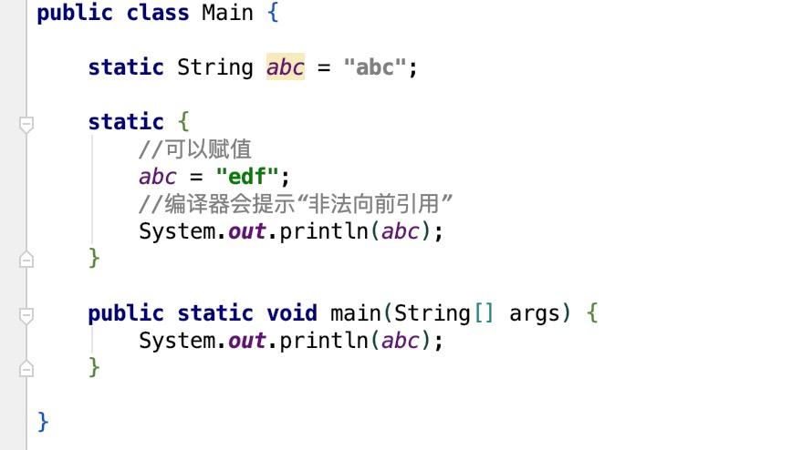

原文连接:https://www.cnblogs.com/secbro/p/11747933.html
关于Java虚拟机类加载机制往往有两方面的面试题：根据程序判断输出结果和讲讲虚拟机类加载机制的流程。其实这两类题本质上都是考察面试者对Java虚拟机类加载机制的了解。
面试题试水
现在有这样一道判断程序输出结果的面试题，先看看打印的结果是什么？
public class SuperClass {
static {
System.out.println("SuperClass static init");
}
public static String ABC = "abc";
}
public class SubClass extends SuperClass{
static {
System.out.println("SuperClass static init");
}
}
public class Main {
public static void main(String[] args) {
System.out.println(SubClass.ABC);
}
}
上面定义了三个类，其中SubClass继承SuperClass，然后Mian类中打印SubClass.ABC的值。那么，控制台打印结果是什么？
SuperClass static init
abc你做对了么？这是为什么呢？对于静态字段，只有直接定义这个字段的类才会被初始化，因此通过其子类来引用父类中定义的静态字段，只会触发父类的初始化而不会触发子类的初始化。
再对上面的代码进行调整，对静态变量ABC添加final修饰。
public class SuperClass {
static {
System.out.println("SuperClass static init");
}
public static final String ABC = "abc";
}
public class SubClass extends SuperClass{
static {
System.out.println("SuperClass static init");
}
}
public class Main {
public static void main(String[] args) {
System.out.println(SubClass.ABC);
}
}打印结果为：
abc这又是为什么呢？因为，常量在编译阶段会存入调用类的常量池中，也就是说Main类对SubClass.ABC的引用已经与SuperClass无关了，实际上已经转行为Main类对ABC的引用了。
做好的铺垫，可以开始对类加载机制的了解了。
类加载过程
虚拟机把描述类的数据从Class文件加载到内存，并对数据进行校验、转化解析和初始化，最终形成可以被虚拟机直接使用的Java类型，这就是虚拟机的类加载机制。
整个生命周期包括：加载（Loading）、验证（Verification）、准备(Preparation)、解析(Resolution)、初始化(Initialization)、使用(Using)和卸载(Unloading)7个阶段。其中准备、验证、解析3个部分统称为连接（Linking）。
其中加载、验证、准备、初始化和卸载的执行顺序是确定的，解析阶段则在某些情况下可以在初始化阶段之后再开始，这是为了支持Java语言的运行时绑定（也称为动态绑定或晚期绑定）。
加载阶段
在加载阶段虚拟机会完成三件事：
- 通过一个类的全限定名来获取定义此类的二进制字节流；
- 将这个字节流所代表的静态存储结构转化为方法区的运行时数据结构；
- 在内存中生成一个代表这个类的java.lang.Class对象，作为方法区这个类的各种数据的访问入口；
其中获取二进制字节流可以通过Class文件、ZIP包、网络、运行时（动态代理）、JSP生成、数据库等途径获取。
需要注意的是数组类的加载，数组类并不通过类加载器加载，而是由Java虚拟机直接创建，但数组类的元素还是要依靠类加载器进行加载。
这些二进制字节流加载完成之后，按照指定的格式存放于于方法区内（Java7及以前方法区位于永久代，Java8位于Metaspace）。然后在方法区生成一个比较特殊的java.lang.Class对象，用来作为程序访问方法区中这些类型数据的外部接口。
验证阶段
验证的目的是为了确保Class文件的字节流中包含的信息符合当前虚拟机的要求，并且不会危害虚拟机自身的安全。
文件格式验证：验证字节流是否符合Class文件格式的规范；比如，是否以魔术0xCAFEBABE开头、主次版本号是否在当前虚拟机的处理范围之内、常量池中的常量是否有不被支持的类型。只有验证通过才会进入方法区进行存储。
元数据验证：对字节码描述的信息进行语义分析，以保证其描述的信息符合Java语言规范的要求；比如，是否有父类（除Object类）、父类是否为final修饰、是否实现抽象方法或接口、重载是否正确等。
字节码验证：通过数据流和控制流分析，确定程序语义是合法的、符合逻辑的。比如，保证数据类型与指令正常配合工作、指令不会跳转到方法体外的字节码上，方法体中的类型转换是有效的等。
符号引用验证：在虚拟机将符号引用转化为直接引用的时候进行验证，可以看做是对类自身以外的信息（常量池中的各种符号引用）进行匹配性的校验。常见的异常比如：java.lang.NoSuchMethdError、java.lang.NoSuchFiledError等。
准备阶段
准备阶段主要是正式为类变量分配内存并设置类变量初始值，变量所使用的内存都将在方法区中进行分配。
此处的类变量指的是被static修饰的变量，不包含实例变量，实例变量在对象实例化阶段分配在堆中。
public static String ABC = "abc";并且，变量的初始化值并不是类中定义的值，而是该变量所属类型的默认值。
当然，也有特殊情况，比如当变量被final修饰时：
public static final String ABC = "abc";此时，该字段属性是ConstantValue时，会在准备阶段初始化为指定的值。
解析阶段
解析阶段是虚拟机将常量池内的符号引用替换为直接引用的过程。解析动作主要针对类或接口、字段、类方法、接口方法、方法类型、方法句柄和调用点限定符7类符号引用进行。
这里我们看一下字段解析，也就是最开始第一道面试题。当获取SubClass的属性ABC时，首先会查找SubClass本身是否包含该字段，如果包含则直接返回引用，查找结束。
否则，如果SubClass类实现了接口或继承了父类，那么则递归搜索各个接口和父类，找到匹配的属性则返回，查找结束。
否则，查找失败，抛出java.lang.NoSuchFieldError异常。如果返回成功了，但是是权限校验失败，也就是无该字段的访问权限，则抛出java.lang.IllegalAccessError异常。
其他形式的解析，就不再这里一一说明了。
初始化阶段
初始化阶段才是真正执行类中定义的Java程序代码（字节码）。在此阶段会根据代码进行类变量和其他资源的初始化，或者可以从另一个角度来表达：初始化阶段是执行类构造器
编译器提示错误。
将其放在后面，则正常编译执行，输出结果为“edf”：

如果将static中的打印语句去掉，那么下面这段代码的打印结果会是什么呢？
public class Main {
static {
//可以赋值
abc = "edf";
//编译器会提示“非法向前引用”
// System.out.println(abc);
}
static String abc = "abc";
public static void main(String[] args) {
System.out.println(abc);
}
}打印结果为“abc”。在准备阶段属性abc的值为null，然后类初始化按照顺序执行，首先执行static块中的abc=“edf”赋值操作，接着执行abc="abc"的赋值操作，此时值为“abc”。当main方法调用打印时则为“abc”。
由于父类的
接口中不能使用静态语句块，但仍然有变量初始化的赋值操作，因此接口与类一样都会生成
虚拟机会保证一个类的
虚拟机规范初始化
虚拟机规范严格规定了有且只有5中情况（jdk1.7）必须对类进行“初始化”（而加载、验证、准备自然需要在此之前开始）：
- 遇到new,getstatic,putstatic,invokestatic这失调字节码指令时，如果类没有进行过初始化，则需要先触发其初始化。生成这4条指令的最常见的Java代码场景是：使用new关键字实例化对象的时候、读取或设置一个类的静态字段（被final修饰、已在编译器把结果放入常量池的静态字段除外）的时候，以及调用一个类的静态方法的时候。
- 使用java.lang.reflect包的方法对类进行反射调用的时候，如果类没有进行过初始化，则需要先触发其初始化。
- 当初始化一个类的时候，如果发现其父类还没有进行过初始化，则需要先触发其父类的初始化。
- 当虚拟机启动时，用户需要指定一个要执行的主类（包含main()方法的那个类），虚拟机会先初始化这个主类。
- 当使用jdk1.7动态语言支持时，如果一个java.lang.invoke.MethodHandle实例最后的解析结果REF_getstatic,REF_putstatic,REF_invokeStatic的方法句柄，并且这个方法句柄所对应的类没有进行初始化，则需要先出触发其初始化。
该段内容引自周志明《深入理解java虚拟机》。
小结
经过以上步骤，便完成了虚拟机类的加载过程，后续会继续讲解虚拟机的类加载器和双亲委派机制。欢迎大家关注公众号“程序新视界”继续深入学习。
原文链接：《面试官，不要再问我“Java虚拟机类加载机制”了》
《面试官》系列文章：